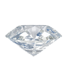

About
Schedule
Press
Projects
People
Swag
ART FAG CITY
This Week’s Must-See Art Events: Beyond the Gallery
THE CREATORS PROJECT
5 Reasons You Should Get On Board With F.A.T. Lab [NYC EVENT]
VANDALOG
Do not miss: F.A.T. Lab retrospective at Eyebeam
ANIMAL NY
Five years of F.A.T Is Gold at Eyebeam
HYPERALLERGIC
FAT Lab’s KATSU Graffities Paula Cooper Gallery (Inadvertently)
ART INFO
Graffiti Legend KATSU Accidentally Spray Paints Paula Cooper Gold While Making Chelsea Mural
GIZMODO
Mark Zuckerberg's been pummeled and pulverized
THE VLOG
Matt at F.A.T. Lab!
CBCNET LOG
F.A.T. GOLD – フリー アート & テクノロジー、現代のポップ・カルチャーとハッキング・カルチャーが交差するところ
FLAVORWIRE
Flavorpill Guide to This Week’s Top 10 New York Events
ANIMAL NY
It’s Your TED Talk at Eyebeam’s “F.A.T. GOLD” 5-Year Retrospective
IN PROGRESS...
The contents of the site are all in the public domain. You may enjoy, use, modify, snipe about and republish all F.A.T. media and technologies as you see fit.
Twitter
FLATTR

VIMEO
FACEBOOK
GITHUB
FUCK FLICKR